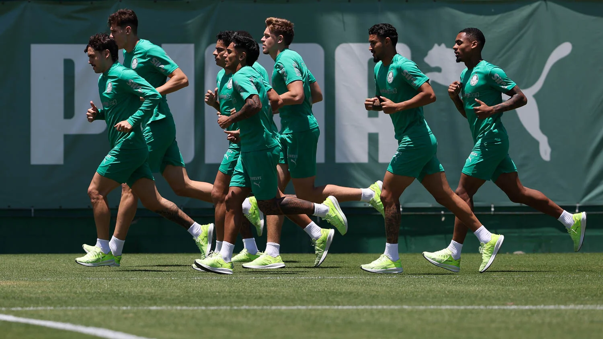
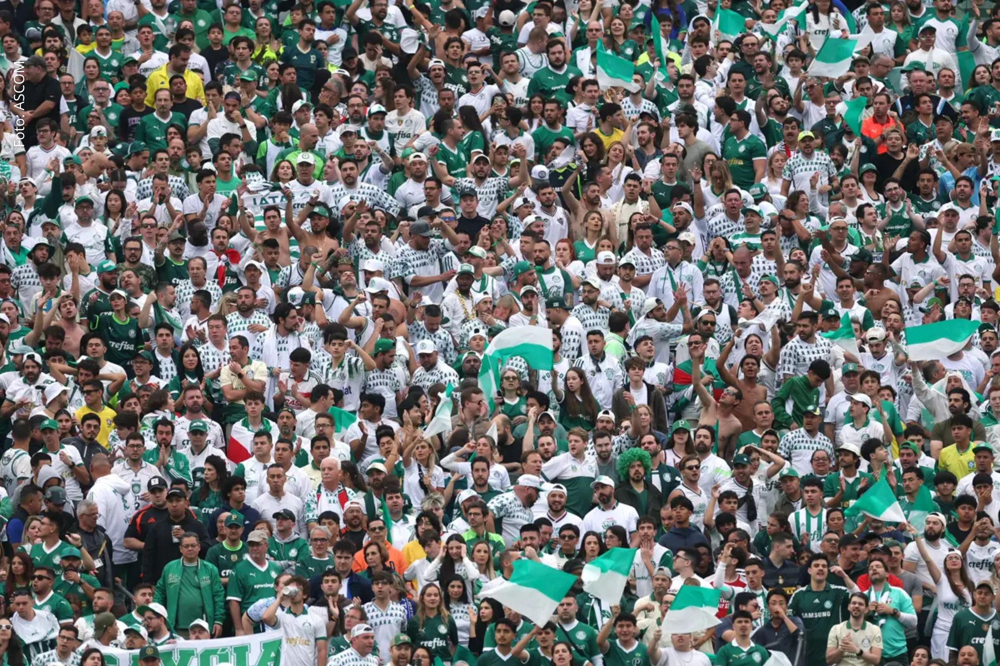
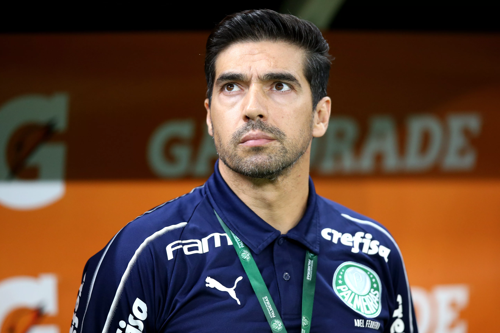
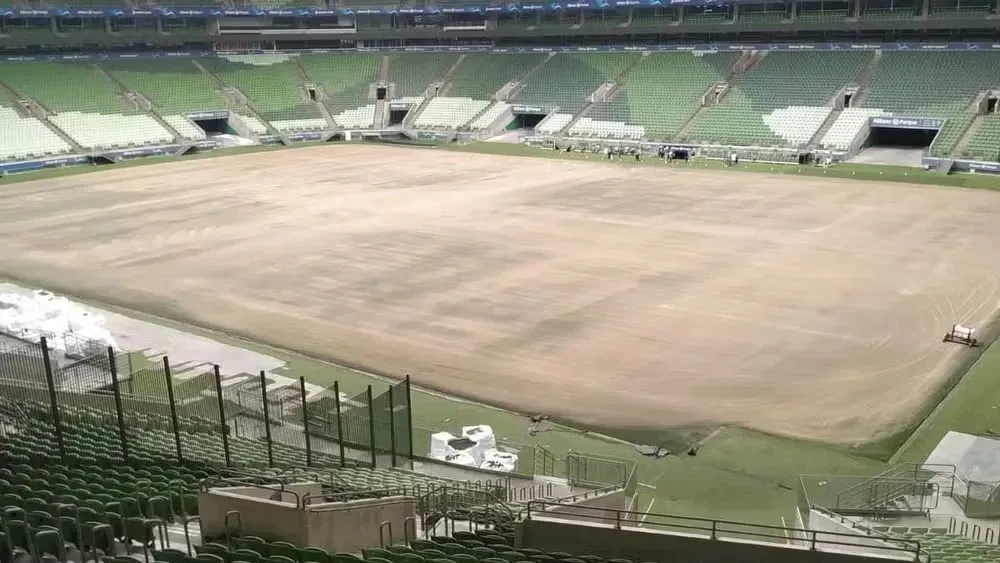
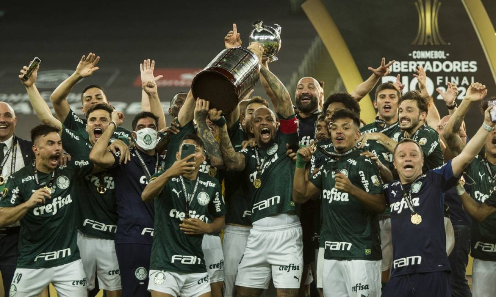
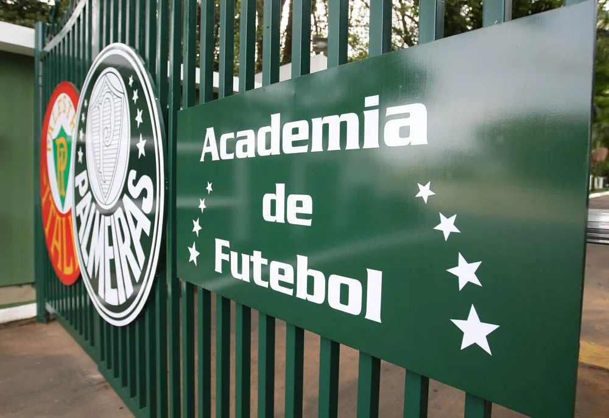
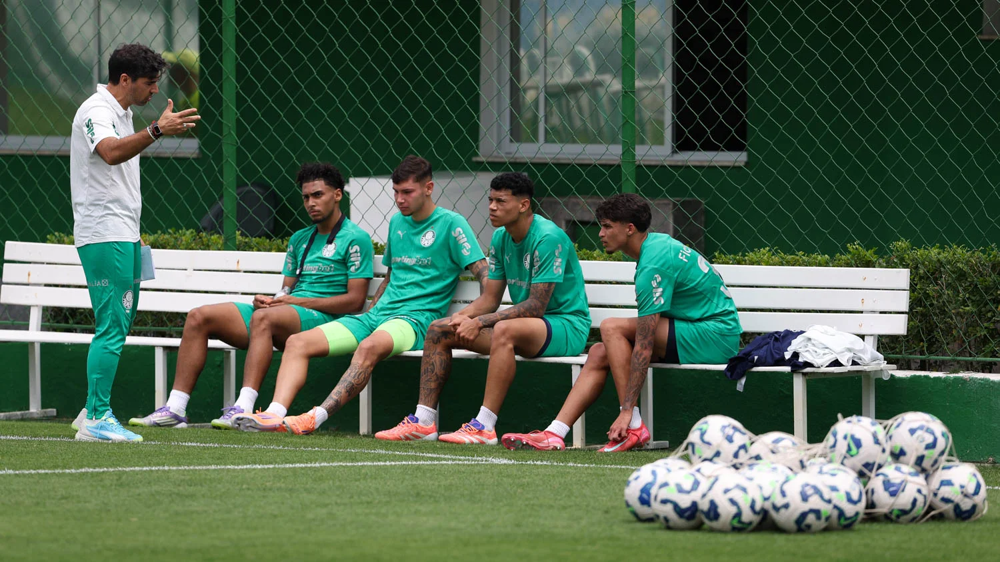
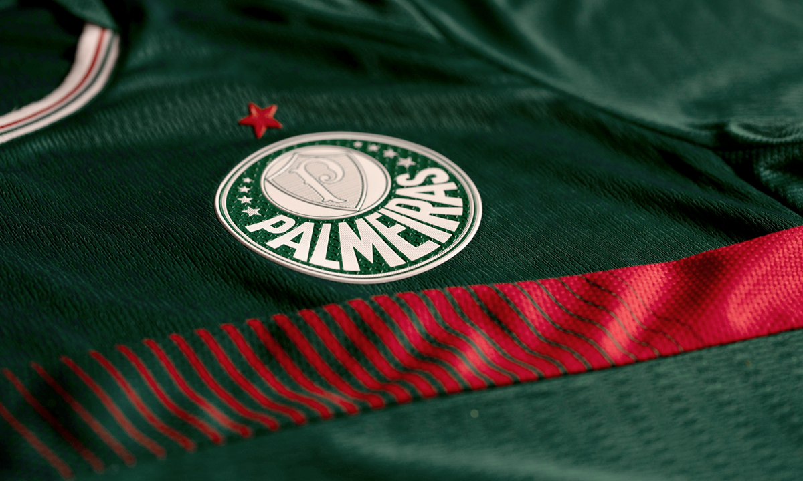
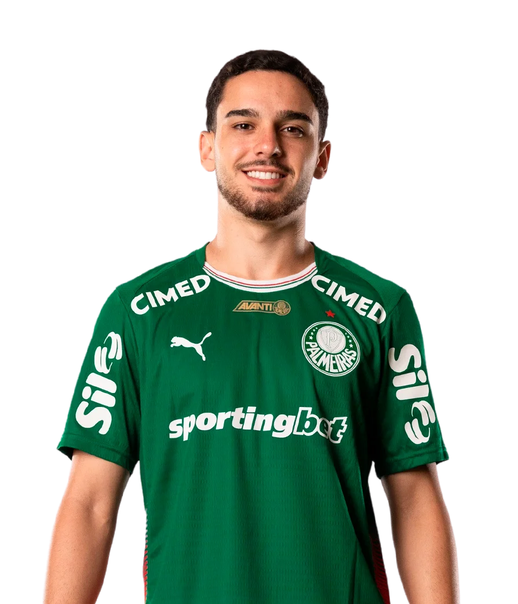

Dérbi na Semifinal: Palmeiras e São Paulo decidem vaga
O Verdão se prepara para o Choque-Rei decisivo no Paulistão. Abel Ferreira estuda variações táticas para furar a defesa tricolor e garantir a vaga na grande final.

Líder do Brasileirão e invencibilidade em casa
Com um início de campeonato avassalador, o Palmeiras mantém a ponta da tabela. A força da torcida tem sido o diferencial para manter a sequência invicta como mandante.

Abel Ferreira: O técnico dos recordes
Mesmo com o passar dos anos, a sede de vitória do comandante português não diminui. Abel segue quebrando recordes de permanência e títulos no futebol brasileiro.

Reforma do gramado no Allianz Parque
A casa do Palmeiras está quase pronta para receber o time de volta. As melhorias no piso prometem um jogo mais veloz e seguro para os atletas de elite.

Palmeiras no topo da América
O reconhecimento oficial chegou: o Verdão agora lidera o ranking da Conmebol, consolidando-se como a maior potência do continente nos últimos anos.

Mercado da Bola: Chegadas e Partidas
A diretoria segue atenta ao mercado para reforçar o elenco de 2026. Novos nomes chegam para suprir as saídas e manter o nível competitivo do grupo.

Nova "Geração de Ouro" da base
As Crias da Academia continuam pedindo passagem. Jovens talentos estão sendo lapidados por Abel e já mostram personalidade nos jogos do estadual.

Uniformes 2026: Sucesso de Vendas
A nova coleção da PUMA caiu no gosto do torcedor. O design que une modernidade e tradição italiana esgotou as primeiras remessas nas lojas oficiais.
ESCALAÇÃO

FelipeAnderson
Meio campo

Figueiredo
Atacante

badvfssd
bdafad